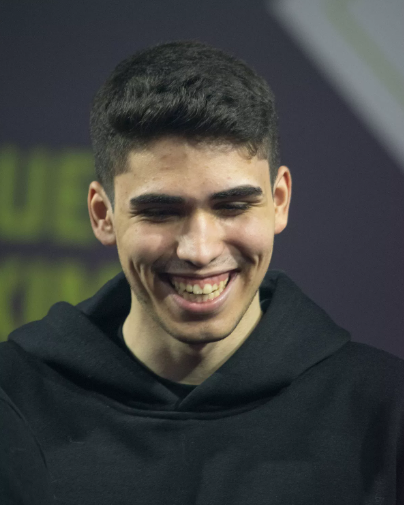

Erick " aspas " Santos (nascido em 15 de junho de 2003) é um jogador brasileiro que atualmente joga pela LOUD .
A LOUD se tornou a primeira equipe brasileira campeã mundial de VALORANT no último mês de setembro ao conquistar o Champions Istanbul 2022. Um dos grandes destaques desse título foi o jovem Erick “aspas” Santos, que inclusive foi MVP da grande final contra a OpTic Gaming.
Títulos
- 18/09/2022 Campeão VALORANT Champions 2022 em Instambul.
- 26/06/2022 Campeão Valorant Champions Tour (VCT)
- 16/12/2022 Troféu de revelação do ano
- 16/12/2022 Melhor atleta de Valorant
- 16/12/2022 Melhor jogador de esports do ano